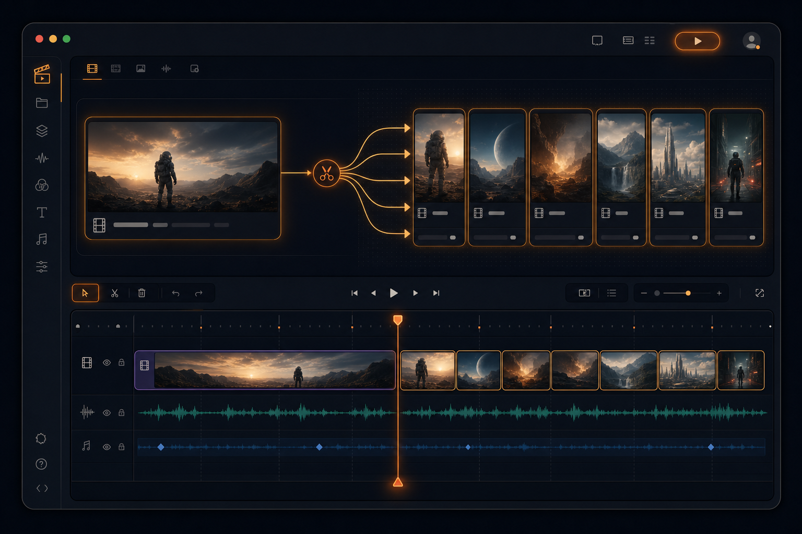
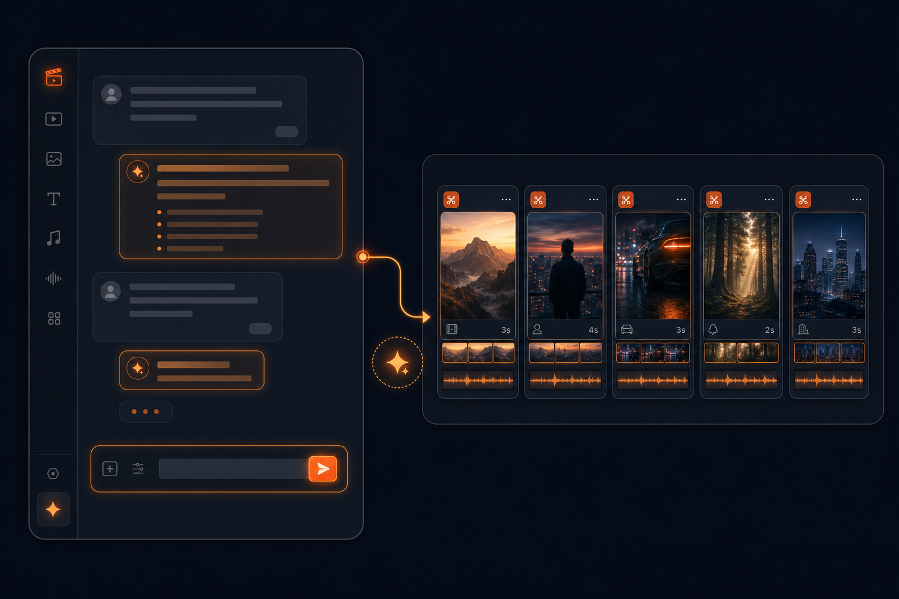
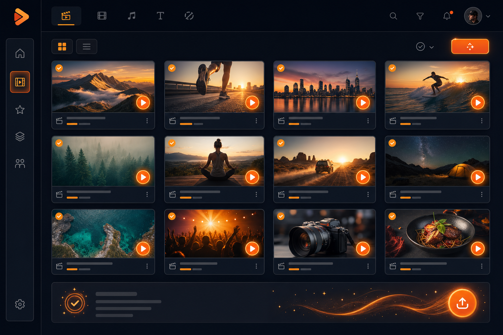
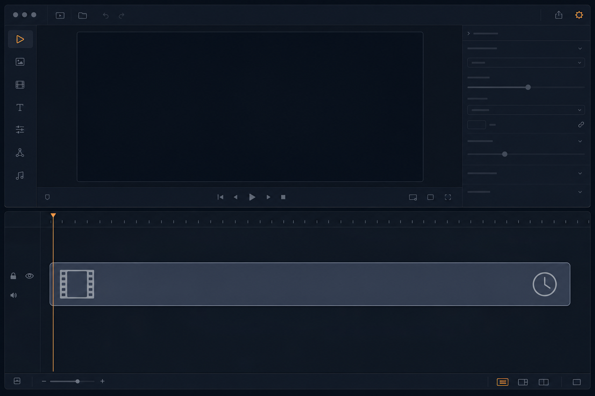

Bạn mang video mình đã quay vào. Đây là khóa hậu kỳ, không phải khóa để AI tự sinh video từ con số 0.
Bạn không ngồi cắt, cũng không thuê người dựng. Bạn gõ yêu cầu bằng tiếng Việt cho một bộ máy AI chạy ngay trên máy tính của mình - nó cắt video dài thành loạt clip, gắn phụ đề, làm đúng gu thương hiệu của bạn, và làm cả loạt cùng lúc.
Đăng ký XƯỞNG VIDEO AI - 868.000đ
Buổi livestream tháng trước. Buổi hội thảo bạn đứng nói hai tiếng. Video sự kiện. Buổi quay sản phẩm. Buổi bạn ngồi chia sẻ với khách hàng.
Quay thì xong rồi. Nội dung thì hay thật. Nhưng nó vẫn nằm im ở đó.
Vì để đăng được, bạn còn phải cắt. Phải chọn đoạn. Phải gắn phụ đề. Phải cắt bỏ chỗ ngập ngừng. Phải xuất ba tỉ lệ khung cho ba nền tảng. Và bạn thì không có thời gian.
Bạn ngồi xuống định dựng "một chút thôi". Ba tiếng sau bạn ngẩng lên, mới xong đúng một clip. Trong khi lịch đăng tuần này còn năm bài đang trống.
Bạn không thiếu nội dung, bạn chỉ thiếu thời gian để cắt nó ra. Vấn đề không nằm ở khâu quay. Nó nằm ở khâu sau khi quay. Và tuần nào cũng lặp lại y như tuần trước.
Phần mềm miễn phí làm được. Vấn đề là bạn phải ngồi: tua đi tua lại tìm chỗ cắt, kéo từng đoạn, sửa từng dòng phụ đề máy nghe sai.
Một buổi live hai tiếng, cắt ra mười clip tử tế, bạn mất trọn một ngày làm việc. Bạn là người chủ - một ngày của bạn không nên trôi vào đó.
Giá tham khảo phổ biến 1 đến 3 triệu một video. Nhưng chỗ đau nhất là bạn phải mô tả: muốn cắt đoạn nào, màu chữ gì, nhận bản một không đúng ý, mô tả lại.
Tháng sau thuê người khác, bạn lại mô tả từ đầu. Không ai nhớ giùm bạn gu của bạn.
Nó nhắm clip 30 đến 60 giây dễ lan truyền, không hiểu bạn đang nói gì. Bạn giảng quy trình bốn bước trong mười hai phút, nó cắt đứt ở phút thứ ba vì chỗ đó bạn nói to.
Việc bạn cần là cắt buổi hai tiếng thành mười hai bài trọn ý. Không nút nào bấm ra được việc đó.
Bạn không đi tìm nút nữa. Bạn ra lệnh bằng tiếng Việt, đúng như cách dặn một người thợ dựng:
"Cắt video này thành các clip theo chủ đề, đừng cắt ngang câu." "Gắn phụ đề, dùng font và màu thương hiệu của tôi." "Lồng nhạc nền, thêm hiệu ứng chuyển cảnh, xuất khung dọc và khung ngang."
Không phải kỹ năng chung chung. Là những việc cụ thể bạn làm được ngay tuần sau.
Khúc ngốn hết thời gian nằm ở sau khi tắt máy quay: AI sẽ cắt cho gọn, thêm phụ đề, lồng nhạc, tạo hiệu ứng, và chèn thêm cảnh minh họa cho ra video xem được. Khóa này giao trọn khúc đó cho AI - bạn gửi một câu, máy làm hết. Đây là 7 điều bạn đang lo, và cách máy làm từng điều.
Tám giờ sáng. Bạn mở máy, uống cà phê. Cuối tuần bạn vừa quay xong một buổi chia sẻ dài hai tiếng, file nằm trong thư mục.
Bạn gõ một câu: cắt buổi này thành các bài theo chủ đề, gắn phụ đề theo bộ thương hiệu của tôi, xuất khung dọc và khung ngang. Rồi bạn đứng dậy đi họp khách, gọi cho đối tác, làm việc của một người chủ.
Mười một giờ bạn quay lại bàn. Mười bốn clip nằm sẵn trong thư mục. Có phụ đề. Đúng màu, đúng font của bạn. Tên file đọc là biết clip nào nói về gì. Bạn xem qua ba clip. Được. Bạn đăng.
Không còn buổi tối nào ngồi tua video tới mười một giờ đêm, không còn tin nhắn giục người dựng, cũng không còn cảm giác lịch đăng trống mà mình thì đang chạy sau. Video bạn quay không còn nằm im nữa.
Bên trái là video thô quay xong nằm im. Kéo sang phải xem nó thành loạt clip gọn, đăng được ngay.


Kéo nút tròn ở giữa sang trái - phải
Học lúc nào cũng được. Xem lại bao nhiêu lần cũng được. Bấm từng chương để xem bạn nhận được gì.
Cửa khó nhất của cả hành trình, nên được cầm tay kỹ nhất khóa. Mỗi bài cài đúng một thứ, cài xong bấm thử ngay tại chỗ - hỏng đâu biết ngay đó, không ôm cả đống rồi ngồi đoán.
Không phải học hết khóa mới thấy kết quả. Ngay chương này đã có clip đăng được, và bạn hiểu vì sao máy cắt theo câu nói chứ không cắt theo đồng hồ.
Buổi livestream, buổi hội thảo, video sự kiện đang nằm im trong ổ cứng - chương này biến nó thành loạt clip, mỗi clip trọn một ý, đăng được ngay.
Chỗ khác biệt lớn nhất so với mọi phần mềm cắt tự động. Bạn khai màu, font, cách trình bày một lần - từ đó máy tự làm đúng gu, không phải dặn lại.
Có hai mươi video cần xử thì không ngồi bấm hai mươi lần. Một lệnh chạy hết, và xuất luôn nhiều tỉ lệ khung cho từng nền tảng.
Những buổi quay từ năm ngoái đang nằm im vẫn còn bán được. Chương này dạy cách lọc ra đoạn còn giá trị và cắt thành clip bán hàng, không phải quay thêm.
Dành cho freelancer muốn nhận việc, và nhân viên muốn gánh nổi mảng video của công ty. Đóng cách làm của bạn thành quy trình chạy lại được.
Tôi không dạy cái tôi đọc được. Tôi dạy cái tôi đang dùng hằng ngày cho công việc của chính mình.
Tôi có một buổi dạy trực tuyến dài 2 tiếng 12 phút. Tôi đưa nó vào máy, cắt thành 14 bài học riêng, mỗi bài trọn một chủ đề. Toàn bộ 14 bài đó đang nằm trên trang học của học viên tôi.
Tôi cắt 6 video lời chứng của học viên thành clip sạch, dựng 4 dự án video bằng công cụ tự động kèm giọng đọc AI, và tự tay tinh chỉnh 3 bộ công cụ riêng cho việc của mình.
Và tôi chạy toàn bộ việc này trên máy Windows. Nên tôi biết đúng những chỗ máy Windows hay hỏng lúc cài, và biết cách gỡ. Chương 0 của khóa này ra đời từ đó.
Thành viên chính thức BNI - tổ chức kết nối kinh doanh lớn nhất thế giới, sinh hoạt cùng cộng đồng chủ doanh nghiệp mỗi tuần.
Thuê dựng ngoài, giá tham khảo phổ biến 1 đến 3 triệu cho một video. Bạn có bao nhiêu video dài đang nằm im?
Chỉ cần xử lý một video duy nhất, tiền thuê ngoài đã ngang hoặc hơn học phí trọn khóa. Xử lý video thứ hai, bạn đã lời. Xử lý video thứ mười, bạn giữ lại số tiền bằng cả chục lần học phí.
Thuê ngoài: bạn trả tiền để có một video. Học xong: bạn trả một lần để có mọi video sau này.
Học phí trọn khóa 868.000đ - chưa bằng tiền thuê dựng một video. Bộ máy này nằm trên máy bạn, nhớ gu của bạn, dùng bao nhiêu lần cũng được.
| Chương 0 - 8 bài cài đặt cầm tay, thử ngay tại chỗ | Nếu không: mò một mình nhiều buổi tối, hoặc bỏ cuộc ngay cửa đầu |
| Chương 1 và 2 - 10 bài cắt video dài thành loạt clip | Nếu không: thuê ngoài 1 đến 3 triệu mỗi video, nhân với số video bạn có |
| Chương 3 - 5 bài dạy máy nhớ gu thương hiệu | Nếu không: mỗi lần thuê người mới là mô tả lại từ đầu |
| Chương 4 - 3 bài làm hàng loạt, xuất nhiều tỉ lệ khung | Nếu không: ngồi bấm từng video, dựng lại ba lần |
| Chương 5 và 6 - 6 bài moi nội dung từ kho cũ + nhận việc | Nếu không: video cũ nằm im, không gánh nổi mảng video |
| Buổi Zoom gỡ vướng trực tiếp + 4 món tặng kèm | Nếu không: tắc ở đâu là dừng ở đó |
Phần mềm cắt clip tự động được xây để tìm đoạn dễ lan truyền 30 đến 60 giây, và nó không đọc nội dung bạn nói. Bạn giảng quy trình bốn bước trong mười hai phút, nó cắt đứt ở bước hai vì chỗ đó bạn nói to.
Bộ máy của bạn thì khác: dạy một lần nhớ mãi, một lệnh chạy cả loạt, làm được cả việc lặt vặt quanh video mà không nút nào có sẵn.
Đây chính là lý do Chương 0 có tới 8 bài. Mỗi bài cài đúng một thứ, cài xong thử ngay tại chỗ, có cách kiểm rất cụ thể. Kèm ba lớp đỡ: bộ lệnh mẫu copy dán sẵn, danh sách lỗi tra là ra cách gỡ, và buổi Zoom trực tiếp.
Bạn cần biết dùng máy tính ở mức cơ bản: mở thư mục, copy file, gõ theo hướng dẫn. Làm được những việc đó thì đi qua được Chương 0.
Chưa nên. Khóa này bắt đầu từ lúc bạn đã có file video trong máy. Nó dạy hậu kỳ, không dạy quay. Bạn quay được vài buổi rồi hẵng quay lại đây.
Cả hai đều được. Tôi chạy toàn bộ dây chuyền này trên Windows và dạy theo đúng đó. Người dùng Mac theo được, thao tác gần giống. Điều duy nhất không làm được là học trên điện thoại.
Có hai khoản trả cho bên cung cấp dịch vụ chứ không phải trả cho tôi: phí trợ lý AI và phí bóc tiếng video. Chương 0 có một bài riêng dạy cách tính trước mỗi video tốn bao nhiêu.
Tôi dạy trực tiếp, ngồi cùng lớp, tập trung vào Chương 0. Bạn vướng ở đâu thì mang đúng chỗ đó lên hỏi. Lỗi cài đặt gỡ qua Zoom thường mất vài phút, trong khi ngồi mò một mình có thể mất cả buổi tối. Số người mỗi buổi có giới hạn.
Việc còn lại chỉ là cắt nó ra.
Đăng ký XƯỞNG VIDEO AI - 868.000đ